望
· ♥ 151 likes · 💬 4
おはよう🐹 🐹ほたて🐹 #ハムスター
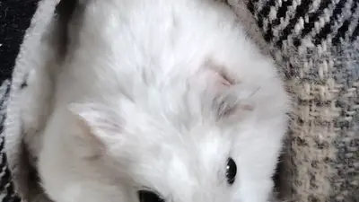
“Beware the Squeak of the Vampire”, a Hamster film production. Starring Christopher Lee as “Count Nibbles.”
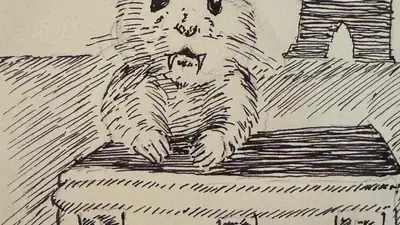
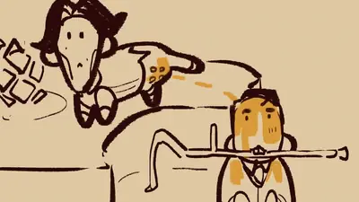
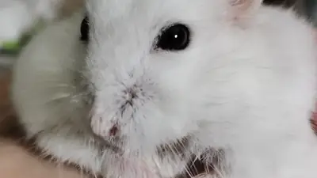
Quercy hasn't forgiven me for taking him for surgery, but at least we're talking now. #petRats #rats
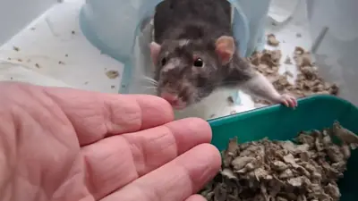
I'm begging for hoteps to add an ounce of hamster suffrage to their politics.
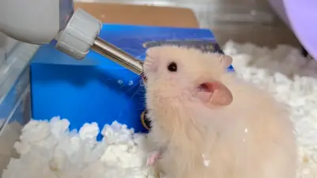
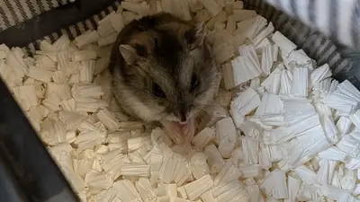
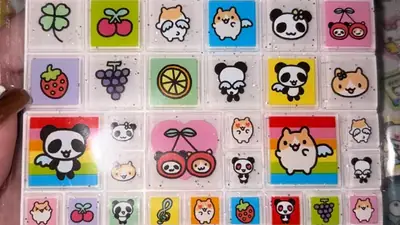
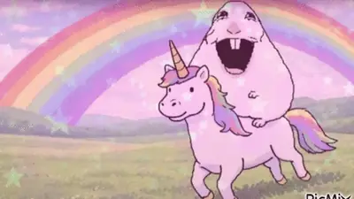
woot! woot! it's hamster dance time! digging this crazy fast beat for Ring of Fire! #Paws4Music
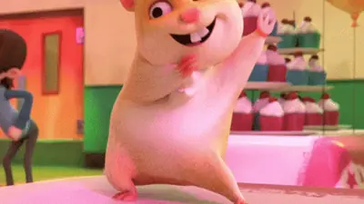
what a wonderful world a world full of music and dancin' #Paws4Music
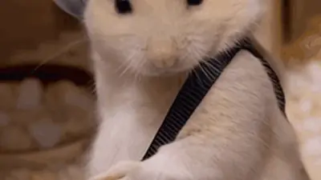
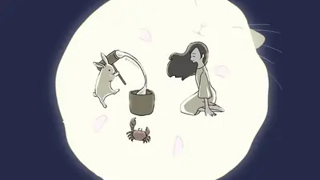
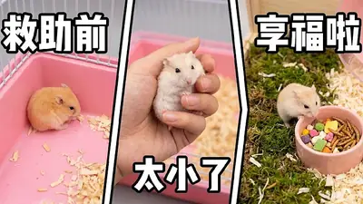
YouTube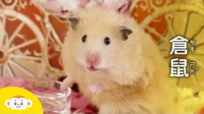
YouTube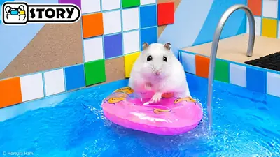
YouTube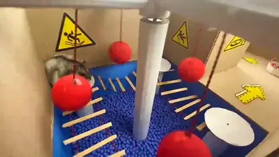
YouTube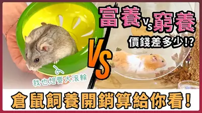
YouTube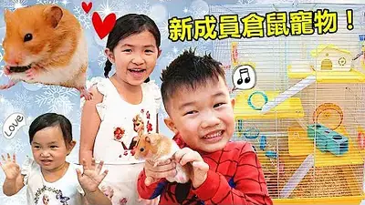
YouTube